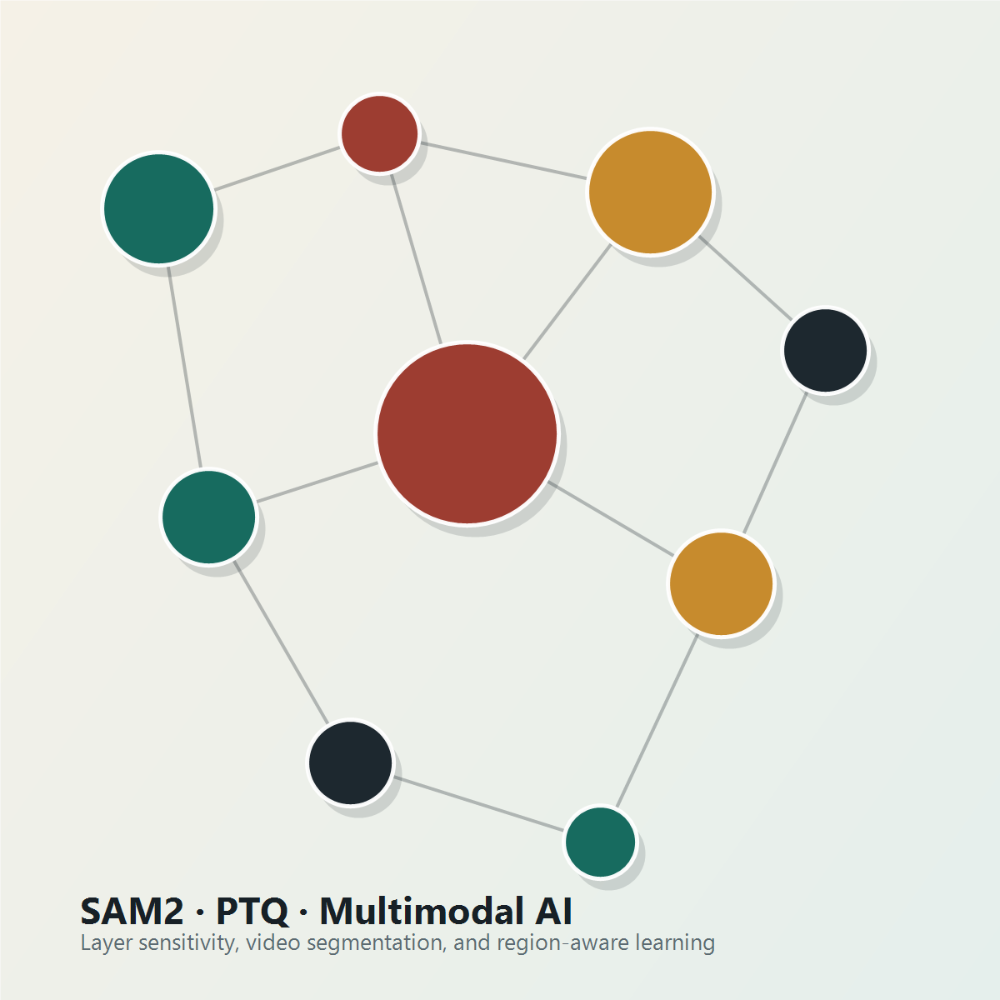

Artificial Intelligence · Beihang University
Efficient multimodal and video intelligence.
I am an undergraduate researcher in Artificial Intelligence at Beihang University, interested in post-training quantization, video segmentation, multimodal pre-training, and system-level intelligent agents.

Research Focus
Building efficient models without giving up fine-grained understanding.
My current work studies layer-sensitivity-guided mixed-precision post-training quantization for SAM2 video segmentation. The work identifies uneven quantization sensitivity across memory-related and mask-decoding modules, then restores the most sensitive layers under an average bit-width budget.
I also work on multimodal pre-training for region-aware semantic understanding and system-level agents for intelligent operations and maintenance.
Selected Work
Projects
Oct 2025 - Jul 2026
Layer Sensitivity Matters: Mixed-Precision PTQ for SAM2 Video Segmentation
Designed GLS-MPQ, a layer-sensitivity-guided mixed-precision post-training quantization method for SAM2. The project includes quantization integration, DAVIS-2017 and SA-V evaluation pipelines, layer sensitivity analysis, mixed- precision search, M-KVM ablations, and comparisons with AdaRound, QDrop, PTQ4SAM, and QMini-SAM2.
May 2025 - Oct 2025
Starops: System-Level Agent for Intelligent Operations and Maintenance
Built an intelligent O&M agent on the Kylin operating system for monitoring, anomaly detection, dependency analysis, automatic optimization, and system-level question answering. The log anomaly detection module combines BERT semantic encoding, a LLaMA decoder, and a projector for semantic-space alignment.
May 2025 - May 2026
JARA: Joint Alignment and Reconstruction for Region-Aware Pre-training
Proposed a visual-context-reconstruction based image-text pre-training framework with ViT and BERT. I mainly designed Spatially Balanced Masking, a strategy that dynamically adjusts mask sampling to improve cross-region semantic modeling, with validation on COCO, Flickr30K, and ADE20K.
Recognition
Honors and awards
- IJCAI 2026 GLOW Workshop, first author and oral presentation.
- National Inspirational Scholarship, 2024-2025.
- First Prize, 16th National College Student Mathematics Competition.
- Honorable Mention, 2026 Mathematical Contest in Modeling.
- Beijing First Prize, 2025 China Undergraduate Mathematical Contest in Modeling.
- Academic Excellence Scholarship and First Prize Discipline Competition Scholarship, 2024-2025.
- Teaching assistant for Advanced Algebra for Engineering, Fundamentals of Physics, Mathematical Statistics, Data Structures, and Signals and Systems.
Education
Beihang University
B.Eng. in Artificial Intelligence
Sep 2023 - Present
Selected coursework: Mathematical Statistics, Linear Algebra, Probability Theory, Computer Graphics, Signals and Systems, Edge Intelligence and Control, Mathematical Analysis, and Machine Learning.
Contact